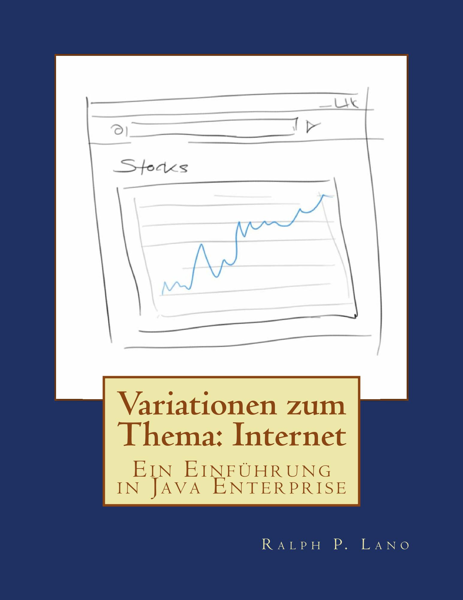

Variationen zum Thema:
Internet
Eine Einführung in Java Enterprise
von Ralph P. Lano, 1. Auflage
Für wen
das Buch richtet sich an Bachelor-Studierende im vierten oder fünften Semester. Als Voraussetzung sollte man vor allem Java mitbringen. Ausserdem schadet es nichts etwas über Datenstrukturen gehört zu haben, wir brauchen auf jeden Fall die Datenkontainer List, Map und Set. Da das Internet ja ein Netzwerk von Computern ist, schadet auch eine Netzwerk Vorlesung nichts. Hier wären wichtig die Protokolle TCP/IP und evtl. ein bischen HTTP. Einfache HTML Kenntnisse sind hilfreich, die kann man sich aber auch sehr schnell noch selbst aneignen. Wenn man eine Vorlesung zu Software Engineering gehört hat, dann werden viele Dinge in diesem Buch wahrscheinlch etwas mehr Sinn machen. Man kann das Buch aber auch ohne verwenden. Das Buch ist eigentlich nicht zum Selbststudium gedacht, sondern als Begleitung zu einer Vorlesung. Aber ausschließen will ich es nicht.
Von wem
ich bin seit 2011 Professor für Internetprogrammierung und Multimediaapplikationen im Studiengang MediaEngineering an der Technischen Hochschule Nürnberg. Von 2003 bis 2010 war ich Professor für Softwaretechnik und multimediale Anwendungen an der Hochschule Hof, und von 2010 bis 2011 Professor für Media and Computing an der Hochschule für Technik und Wirtschaft Berlin. Ich promovierte 1996 an der University of Iowa zum Thema 'Quantum Gravity: Variations on a Theme'. Von 1996 bis 1997 war ich Postdoctoral Research Associate am Centre for Theoretical Studies des Indian Institute of Science. In der Zeit von 1997 bis 2003 war ich zunächst bei Pearson Education und später bei der Siemens AG in der Softwareentwicklung und dem Projektmanagement tätig.
Über was
die Hauptthemen in diesem Buch sind Java Server Pages, Object Relational Mapping und Web Services. Wir beginnen allerdings ganz einfach mit den Basics, klären einige Begriffe wie HTTP, CSS und JavaScript und verbringen das erste Kapitel mit ganz vielen kleinen HTML Projekten. Alle diese Projekte werden dann in späteren Kapiteln mit Leben gefüllt. Dann wird die Idee hinter Java Server Pages vorgestellt, der Zusammenhang mit Java erklärt und die ersten Schritte in Richtung dynamischer Webseiten unternommen. Nebenbei werden auch die Themen Logging, Exceptions und der JSP Lebenszyklus behandelt. Im Kapitel Request and Response geht es vor allem um erste Interaktion mit den Nutzern. Dabei werden auch Hintergründe zum HTTP Protokoll gegeben. Die Projekte sollen ein gewisses Sicherheitsbewusstsein entwickeln, aber es werden auch Themen wie Reflection und Code Generation angesprochen. Mit den Session und Application Objekten beschäftigen wir uns ausführlich, zahlreiche Beispiele verdeutlichen die jeweiligen Anwendungsszenarien und erläutern den Unterschied. In den Projekten werden dann zahlreiche Beispiele aus dem ersten Buch "webifiziert". Persistenz ist das Thema dem wir die meisten Seiten widmen, dabei liegt der Fokus auf dem Object Relational Mapping. Mit einfachen Beispielen werden die Begriffe POJO, Dao und die verschiedenen X-to-Y Beziehungen zunächst vorgestellt und anschliessend vertieft. Dabei wird auch klar warum Generics super cool sind. Zum Abschluß stellen wir Servlets und Filter vor, das Hauptthema sind aber Web Services der RESTvollen Art.
Wie
lernt man Internetprogrammierung? Wie alles, durch viel üben! Deswegen ist auch dieses Buch wieder voll mit Übungsbeispielen. Die Veranstaltung so wie ich sie unterrichte besteht aus drei Komponenten: der Vorlesung, der Übung und Hausaufgaben. Die Vorlesung ist zwei Stunden pro Woche und entspricht jeweils dem ersten Teil eines Kapitels im Buch. Ein Kapitel schaffen wir in ca. ein bis zwei Wochen. In den Übungen, die vier Stunden alle zwei Wochen stattfinden, widmen wir uns dann den Projekten. Dabei schaffen wir zwischen zwei und vier der Projekte pro Übung. In der Übung arbeiten die Studierenden in Teams, meist zu zweit, um sich gegenseitig zu helfen. Die Hausaufgaben werden im zweiwöchentlichen Rhythmus bearbeitet und benötigen ca. 4 bis 5 Stunden. Es ist wichtig, dass die Studierenden alleine an der Hausaufgabe arbeiten.
Wo
finde ich die Beispiele und den Quellcode? Die gibt es auf der Webseite zum Buch: www.VariationenZumThema.de. Auch Updates, Links zur Entwicklungsumgebung, das Buch in elektronischer Version gibt's dort. Das Buch selbst gibt's bei Amazon, in Schwarz-Weiß (billig) und in Farbe (teuer).
Darf ich
die Beispiele verwenden, oder das Buch kopieren? Dieses Material steht unter der Creative-Commons-Lizenz Namensnennung - Nicht-kommerziell - Weitergabe unter gleichen Bedingungen 4.0 International (CC-BY-NC-SA 4.0) D.h. Sie dürfen das Material in jedwedem Format oder Medium vervielfältigen und weiterverbreiten, das Material remixen, verändern und darauf aufbauen. Aber Sie müssen angemessene Urheber- und Rechteangaben machen, einen Link zur Lizenz beifügen und angeben, ob Änderungen vorgenommen wurden. Diese Angaben dürfen in jeder angemessenen Art und Weise gemacht werden, allerdings nicht so, dass der Eindruck entsteht, der Lizenzgeber unterstütze gerade Sie oder Ihre Nutzung besonders. Sie dürfen das Material nicht für kommerzielle Zwecke nutzen. Und wenn Sie das Material remixen, verändern oder anderweitig direkt darauf aufbauen, dürfen Sie Ihre Beiträge nur unter derselben Lizenz wie das Original verbreiten und Sie dürfen keine zusätzlichen Klauseln oder technische Verfahren einsetzen, die anderen rechtlich irgendetwas untersagen, was die Lizenz erlaubt. Um eine Kopie dieser Lizenz zu sehen, besuchen Sie http://creativecommons.org/licenses/by-nc-sa/4.0/.
Der Quellcode steht unter der MIT License (http://choosealicense.com/licenses/mit/).
Warum
dieses Buch? Seit 1996 programmiere ich Java, und seit ca 2003 halte ich die Vorlesung "Internetprogrammieren" in verschiedenen Formen, Studiengängen und Hochschulen. All die Zeit habe ich immer wieder versucht meine Vorlesung an diesem oder jenem Buch zu orientieren. Habe aber nie eines gefunden, auch kein teures, das ich wirklich empfehlen könnte, ausser evtl. das Buch von Herrn Stark [1], und das gibt's nicht mehr. Auch haben die meisten Bücher viel zu wenige Beispiele, vor allem kleine Beispiele. Deswegen.
Woher
kommen die Ideen? Mehr als die Hälfte der Ideen basieren auf meinem ersten Buch, das ja wiederum von Mehran Sahami's Vorlesung [2] inspiriert wurde, die ja wiederum auf dem Buch von Eric Roberts [3] basiert. Der Rest hat sich einfach so ergeben in den Jahren.
Referenzen
[1] J2EE (Master Class) von Thomas Stark
[2] Programming Methodology, CS106A, von Mehran Sahami, https://see.stanford.edu/Course/CS106A
[3] The Art and Science of Java, von Eric Roberts, Addison-Wesley, 2008
.